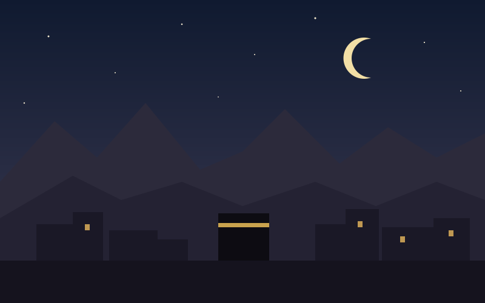
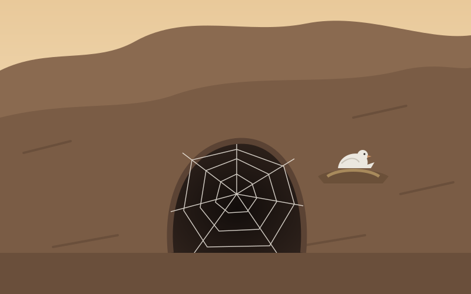
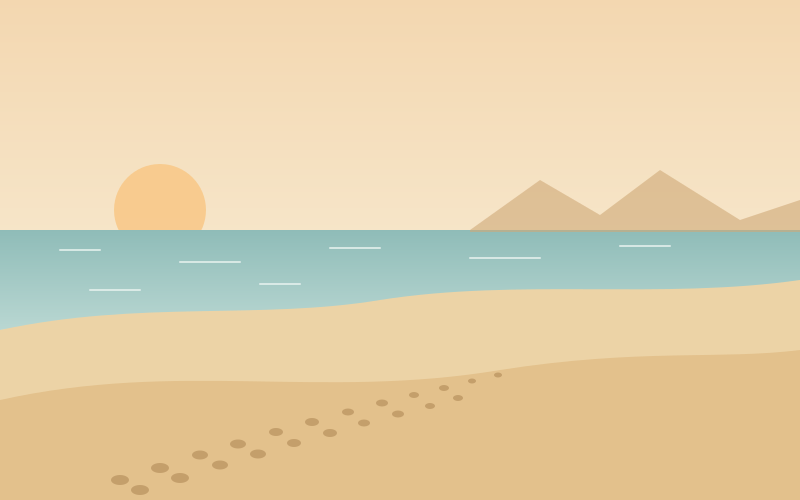
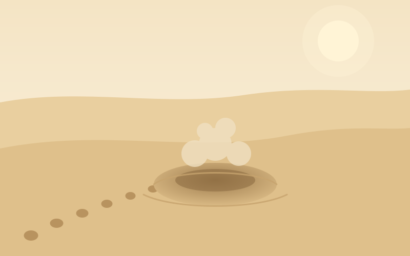
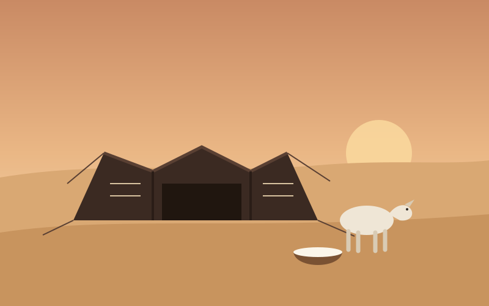
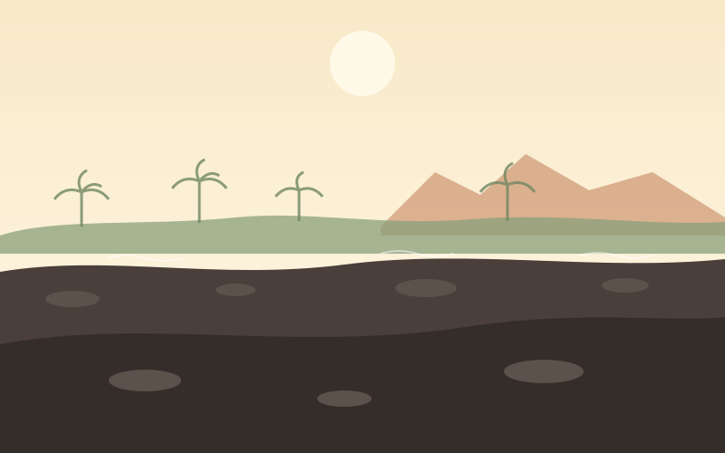
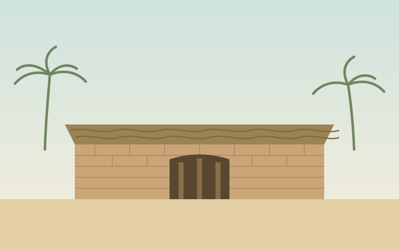
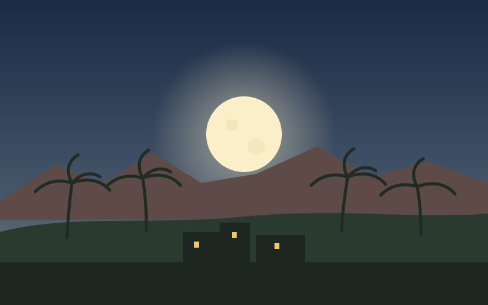

Makkah · مكةThe Night of Departure
For thirteen years the Prophet ﷺ had called the people of Makkah to worship Allah alone. Now the city that had raised him had decided to kill him.
The persecution of the Muslims had grown unbearable, and one by one the believers had slipped away north to Yathrib, a city of palm groves whose people had pledged at al-‘Aqabah to shelter the Prophet ﷺ. Only a few remained behind: the Prophet ﷺ, Abu Bakr, ‘Ali, and those too weak to leave.
In the council house of Quraysh, Dar an-Nadwah, the chiefs agreed on a plan: a young man from every clan would strike him together, so that his blood would be spread among all the tribes and his family could never avenge him. That night they surrounded his house and waited for him to come out.

The Prophet ﷺ asked ‘Ali to sleep in his bed under his green cloak, and to stay behind to return the valuables that the people of Makkah, even his enemies, had left in his trust. Then he walked out through the men at his door, reciting the opening of Surah Ya-Sin, and Allah covered their sight so that none of them saw him leave.
He went to the house of Abu Bakr, who wept with joy when he learned he would be his companion on the journey. Two camels had been fattened for months in readiness. They left by a back opening of the house and, instead of taking the northern road to Yathrib, turned south, into the mountains. On the edge of the city the Prophet ﷺ looked back and said that Makkah was the most beloved land of Allah to him, and that had its people not driven him out, he would never have left.
Ghar Thawr · غار ثورThe Second of Two
South of Makkah rises Jabal Thawr, steep and rocky. Near its summit is a narrow cave, and there the two of them hid for three nights.
Abu Bakr went in first to make sure nothing in the dark could harm the Prophet ﷺ, sealing the holes in the rock with pieces of his own garment. When Quraysh woke to find ‘Ali in the bed, they were furious. They sent riders down every road and trackers into the hills, and they offered a reward of a hundred camels for each of the two fugitives, dead or alive.

The trackers climbed all the way to the cave. Abu Bakr could see their feet and whispered that if any of them looked down, they would see them. The Prophet ﷺ answered calmly: “What do you think of two, of whom Allah is the third?” The searchers turned back. Allah later revealed: “...the second of two, when they were in the cave and he said to his companion, ‘Do not grieve; indeed Allah is with us.’”
Abu Bakr’s family carried the secret. His son ‘Abdullah spent each day among Quraysh listening to their plans and slipped up the mountain at night to report. His freedman ‘Amir ibn Fuhayrah grazed sheep near the cave so they could have milk, and drove the flock over ‘Abdullah’s footprints each morning to erase them.
His daughter Asma’ brought food. When she found nothing to tie the provisions with, she tore her waistband in two and used one half to fasten the bag; from that day she was known as Dhat an-Nitaqayn, “the one with the two waistbands.”
What do you think of two, of whom Allah is the third? — Sahih al-Bukhari
After three nights the hunt began to cool. As agreed, ‘Abdullah ibn Urayqit, an expert guide from Banu ad-Du’il who was not a Muslim but was trusted completely, arrived with the two camels. With ‘Amir ibn Fuhayrah riding behind, they set off, and the guide led them away from every road Quraysh was watching: west, down towards the Red Sea.
Usfan · عسفانThe Coastal Road
No one would expect fugitives bound for the north to take the long road by the sea.
The guide brought them down to the coast below Usfan and then turned north, following the low, hot plain of the Tihamah that runs between the mountains and the Red Sea. They crossed the main road near Usfan, passed below Amaj, and kept moving, travelling through the night and resting through the worst of the day’s heat.

It was a journey of well over four hundred kilometres, in the heat of late summer, with a price on their heads. Abu Bakr would ride sometimes in front of the Prophet ﷺ and sometimes behind him, on his right and on his left, so that no danger could reach him from any side.
Qudayd · قديدThe Rider Who Turned Back
In the lands of Banu Mudlij, near Qudayd, a man heard of riders on the coast road and saw his chance at a hundred camels.
Suraqa ibn Malik told the others in his gathering that the riders were surely someone else, then slipped away, armed himself and galloped after them. As he closed in, his horse stumbled and threw him. He tried again, and again the horse fell. The third time, close enough to hear the Prophet ﷺ reciting the Qur’an, his horse’s forelegs sank into the ground up to the knees, and smoke-like dust rose around it.

Suraqa understood that these men were protected. He called out for safety, offered them supplies, and promised to turn back every pursuer he met. At his request, ‘Amir ibn Fuhayrah wrote him a guarantee of security on a piece of leather. Tradition adds that the Prophet ﷺ told him one day he would wear the bracelets of Kisra, the emperor of Persia, and years later, under ‘Umar, that is exactly what happened.
Also at Qudayd, the travellers stopped at the tent of Umm Ma‘bad al-Khuza‘iyyah, a generous woman who gave food and drink to passers-by. That year was a hard one, and she had nothing to offer. In the corner of the tent stood a ewe too weak to go out with the flock, with no milk at all.

The Prophet ﷺ asked permission to milk her. He passed his hand over her udder, said the name of Allah, and the milk flowed until the bowl was full. Everyone drank until satisfied, and he milked her again and left the bowl full for the household. When her husband came home and asked where the milk had come from, Umm Ma‘bad described their guest in words still treasured as one of the most beautiful descriptions of the Prophet ﷺ.
From Qudayd the guide crossed back to the road and climbed into the hills, through al-Kharrar, the pass of al-Marah, Liqf and Mudlijah, on towards al-‘Arj.
Al-‘Arj · العرجThrough the Mountain Passes
The last stretch wound through the valleys and passes of the Hijaz, over Thaniyat al-‘A’ir and down through the valley of Rim.
News that the Prophet ﷺ had left Makkah had already reached Yathrib. Every morning the Muslims of the city, the Muhajirun who had gone ahead and the Ansar who had invited them, walked out to the black lava fields at the edge of town and watched the southern road until the midday heat drove them home.

One day, just after they had gone back inside, a man on the roof of one of the fortresses saw white-clad riders shimmering through the mirage. He shouted out at the top of his voice that the one they were waiting for had come. The Muslims seized their weapons and ran out to meet him at the edge of the harrah.
Quba · قباءThe First Mosque
He arrived on a Monday in Rabi‘ al-Awwal, in September 622 CE, at Quba, a village of the Banu ‘Amr ibn ‘Awf on the southern edge of Yathrib.
He stayed there for several days as the guest of Kulthum ibn al-Hidm. During that time he founded a mosque, carrying stones alongside his companions. It was the first mosque built in Islam, the mosque that, the scholars say, the Qur’an describes as “founded on righteousness from the first day.”

Here, too, ‘Ali caught up with them. Having returned every trust to its owner in Makkah, he had made the whole journey alone and on foot, travelling by night and hiding by day.
On Friday the Prophet ﷺ set out from Quba towards the heart of the city. When the time of prayer came he was in the valley of Ranuna, among the Banu Salim ibn ‘Awf, and there he led the first Friday prayer (Jumu‘ah) and delivered its sermon. A mosque, Masjid al-Jumu‘ah, still marks the place.
Then he rode on into Yathrib. People lined the way, on the roads and on the rooftops. Children and servants ran through the streets calling out that the Messenger of Allah had come. Tradition says they welcomed him with the song we know as Tala‘ al-Badru ‘Alayna, “the full moon has risen over us.”
Al-Madinah · المدينة المنورةThe Radiant City
Every family wanted the honour of hosting him. One after another they took hold of his camel’s reins.
“Let her go,” he said of his camel, al-Qaswa’, “for she is under command.” She walked on through the city until she knelt in an open plot used for drying dates, which belonged to two orphan boys, Sahl and Suhayl. The Prophet ﷺ insisted on paying for the land, and there he built his mosque, al-Masjid an-Nabawi, working on it with his own hands.

Until his house beside the mosque was finished, he stayed with Abu Ayyub al-Ansari. He then bound the Muhajirun and the Ansar together as brothers, with each family of Madinah sharing its home and wealth with an emigrant from Makkah. A persecuted group had become a community.
1 AH · ١ هـThe Year That Began a Calendar
The Hijra was more than an escape. It was the moment the Muslims became a community with a home of their own, and it changed the course of history. Some seventeen years later, when the Caliph ‘Umar ibn al-Khattab and the companions chose a starting point for the Islamic calendar, they did not choose the Prophet’s ﷺ birth, or the first revelation. They chose the year of the Hijra.
Every year since has been counted from this journey: from a city that drove him out, to a cave on a mountain, down a hidden road by the sea, and into a city that welcomed him with open arms.
The true emigrant is the one who leaves what Allah has forbidden. — Sahih al-Bukhari